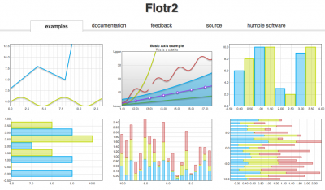

Adicionado ao HTML5, o elemento HTML canvas é um elemento que pode ser usado para desenhar gráficos via código (nomalmente JavaScript). Por exemplo, ele pode ser usado para desenhar gráficos, fazer composição de fotos, criar animações ou até mesmo fazer processamento ou renderização de vídeo em tempo real.
Aplicativos Mozilla ganharam suporte ao canvas a partir do Gecko 1.8 (por exemplo Firefox 1.5). O elemento foi originalmente introduzido pela Apple para o OS X Dashboard e Safari. Internet Explorer suporta canvas a partir da versão 9; para versões mais antigas do IE, uma página pode efetivamente adicionar suporte para canvas ao incluir um código do projeto da Google chamado Explorer Canvas. Google Chrome e Opera 9 também suportam canvas.
Segue um link para os tutoriais em desenvolvimento Canvas e tambem um exemplo de gráficos produzidos pelo mesmo! Canvas Tutoriais
Usar o elemento não é muito difícil, mas antes de começar, você precisa de um conhecimento básico sobre HTML e JavaScript. O elemento não é suportado por alguns navegadores antigos, mas é suportado em versões recentes da maioria dos navegadores. O tamanho padrão de um canvas é de 300px * 150px (largura * altura). Porém, tamanhos customizados podem ser definidos usando as propriedades width e height do CSS. Por exemplo este retangulo abaixo.
Diferente do SVG , o canvas suporta somente formas primitivas: retangulos. Por exemplo: